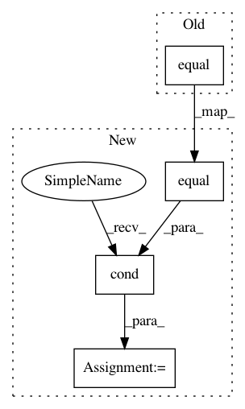

030f2785177566814a69e392337b13f48833a187,train_decaying_keep_prob.py,,keep_prob_decay,#Any#Any#Any#Any#Any#Any#Any#,37
Before Change
// update accumulator
// if trigger: reset_acculator, else accumulator[position] = va
accumulator = tf.cond(
tf.equal(trigger, 1), reset_accumulator,
lambda: tf.scatter_update(accumulator, position, validation_accuracy)
)
// update accumulated (for current prob)
After Change
// update accumulated (for current prob)
// if trigger; accumulated = 1, else accumulated +=1
accumulated = tf.cond(
tf.equal(trigger, 1), reset_accumulated,
update_accumulated)
return keep_prob
In pattern: SUPERPATTERN
Frequency: 3
Non-data size: 4
Instances
Project Name: galeone/dynamic-training-bench
Commit Name: 030f2785177566814a69e392337b13f48833a187
Time: 2016-10-27
Author: nessuno@nerdz.eu
File Name: train_decaying_keep_prob.py
Class Name:
Method Name: keep_prob_decay
Project Name: OpenNMT/OpenNMT-tf
Commit Name: 9149264ad72e24003b76abd1995fe9719e36f4cc
Time: 2019-02-15
Author: guillaume.klein@systrangroup.com
File Name: opennmt/layers/transformer.py
Class Name: MultiHeadAttention
Method Name: call
Project Name: horovod/horovod
Commit Name: 4ec6447563c382045014a28d1fb44707f21022b4
Time: 2020-10-21
Author: aaron@determined.ai
File Name: horovod/tensorflow/gradient_aggregation_eager.py
Class Name: LocalGradientAggregationHelperEager
Method Name: compute_gradients